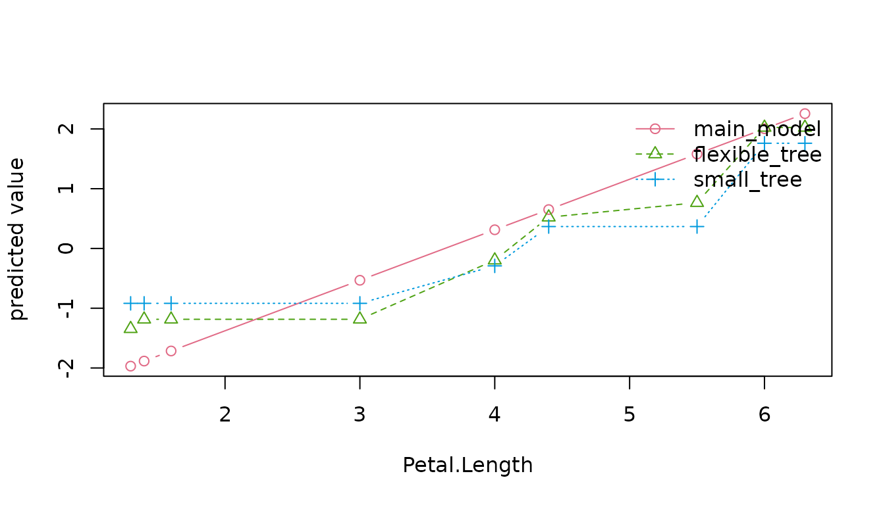

The default, model_set = "tuned", portfolio = "core",
schedules 15 settings across linear, tree and neural families using five
training-only folds. It retains a representative from each successful
family and a baseline for the report. The selected model is evaluated on
rows kept outside that search.
model_set = "quick" fits a pre-specified linear,
logistic or multinomial model and a baseline. "comparison"
adds two pre-specified trees but keeps the same primary model. Its
evaluation ranks are descriptive. Use "tuned" when the
analysis calls for model selection: candidates are compared using
training-only cross-validation before the selected model is scored on
the outer evaluation set.
Choose a portfolio
as.data.frame(learner_catalog())[, c("family", "backend", "supported_tasks", "portfolios")]
#> family backend supported_tasks
#> 1 linear stats/nnet regression, binary, multiclass
#> 2 regularized glmnet regression, binary, multiclass
#> 3 additive mgcv regression, binary
#> 4 tree rpart regression, binary, multiclass
#> 5 forest ranger regression, binary, multiclass
#> 6 boosting xgboost regression, binary, multiclass
#> 7 neural nnet regression, binary, multiclass
#> 8 kernel e1071 regression, binary, multiclass
#> 9 neighbors kknn regression, binary, multiclass
#> 10 mars earth regression, binary
#> portfolios
#> 1 core, recommended, extended
#> 2 recommended, extended
#> 3 recommended, extended
#> 4 core, recommended, extended
#> 5 recommended, extended
#> 6 recommended, extended
#> 7 core, extended
#> 8 extended
#> 9 extended
#> 10 extended| Portfolio | Included families | Dependencies |
|---|---|---|
core |
Linear, tree, neural | Ordinary package dependencies |
recommended |
Linear, regularized, additive, tree, forest, boosting | Optional engines installed explicitly |
extended |
All ten, including kernel, nearest-neighbor and MARS | Additional optional engines |
Additive and MARS learners support regression and binary tasks. The requested portfolio does not change silently with installed packages; a missing engine produces an installation instruction.
tuned <- autoxplain(iris, "Species", model_set = "tuned", portfolio = "core",
max_models = 6, nfolds = 3, seed = 2026)
tuning <- tuning_results(tuned)
tuning$candidates[, c("model", "hyperparameters", "cv_score", "cv_se", "selected")]
#> model
#> 1 neural network
#> 2 neural network
#> 3 decision tree
#> 4 decision tree
#> 5 decision tree
#> 6 multinomial logistic regression
#> hyperparameters cv_score cv_se
#> 1 hidden units = 2, weight decay = 0.03 0.09445857 0.03609199
#> 2 hidden units = 1, weight decay = 0.1 0.29456937 0.01072168
#> 3 max depth = 6, pruning cp = 0.003, minimum split = 10 2.37836688 1.40932486
#> 4 max depth = 2, pruning cp = 0.03, minimum split = 24 2.39466788 1.40612488
#> 5 max depth = 4, pruning cp = 0.01, minimum split = 14 2.39466788 1.40612488
#> 6 default statistical fit NA NA
#> selected
#> 1 TRUE
#> 2 FALSE
#> 3 FALSE
#> 4 FALSE
#> 5 FALSE
#> 6 FALSEEvery fold learns its preprocessing from that fold’s training rows.
The default one-standard-error rule favors the first eligible family in
the documented priority, then its smallest recorded within-family
capacity proxy. Some tuning dimensions are not ordered by that proxy;
for example, a neural weight-count proxy does not order weight decay.
Cross-family priority is a package policy, not a statistical ordering of
model families. Fold-score standard errors are a selection heuristic,
not independent-test confidence intervals. Use
tuning_rule = "best" for the lowest resampled error
instead.
evidence <- tuning_evidence(tuned)
evidence$selection[c("best_configuration", "selected_configuration", "threshold")]
#> $best_configuration
#> [1] "neural_02"
#>
#> $selected_configuration
#> [1] "neural_02"
#>
#> $threshold
#> [1] 0.1305506The report’s Model selection view connects those decisions to the parameter values, effective fold settings and retained fit. The default grid is a small, versioned set of contrasting controls. It does not follow a theorem that makes those numbers optimal for your data. A winning setting on the edge of a searched range is a reason to investigate that range, not evidence that it should always be extended. The range includes failed attempts: being inside it does not imply that neighboring settings produced usable fits. Inspect the successful count and failure reasons. Candidate comparisons stay inside training data.
Explicit optimizer nonconvergence excludes a configuration by
default. Fold and refit records retain the status and reason.
optimization_policy = "warn" in
tuning_control() deliberately keeps such fits with a
warning; an unreported optimizer status remains unknown. Successful
family representatives use their lowest valid within-family CV loss,
while the primary follows the configured global selection rule. These
are different choices.
install_model_engines("recommended")
result <- autoxplain(my_data, "outcome", model_set = "tuned", portfolio = "recommended")tuning_control() accepts explicit parameter grids, fold
IDs, selection rules and failure policies. Inspect its help and
tuning_results() before changing these defaults.
Chronological tuning is not implemented; temporal model selection
requires an explicit rolling-origin design outside this workflow.
Harder data need a deliberate search
The core portfolio keeps installation simple. It does not include
regularization, random forests or boosting. With many predictors,
nonlinear interactions or weak signals, try
portfolio = "recommended" before concluding that useful
prediction is impossible. It schedules 30 configurations by default. You
can also choose families and a budget explicitly:
install_model_engines("recommended")
result <- autoxplain(
training, "outcome", test_data = final_test, evaluation_role = "test",
learners = c("regularized", "forest", "boosting"),
max_models = 30, nfolds = 5, explain = FALSE, seed = 2026
)
tuning_results(result)$candidates
result$leaderboard
result$model_diagnosticsKeep final_test separate before making modeling choices.
Select the search and metric using the training problem, then inspect
its held-out result once. Repeated choices based on the same test scores
turn that set into development data.
The stress comparison uses independent native fits, two synthetic replicates and a real mixed-data problem. Regularization was particularly useful when predictors outnumbered training rows. Boosting improved the nonlinear regression example. Neither guaranteed an improvement in every classification metric. Accuracy alone can be misleading for rare outcomes: inspect probability loss, ranking and mistakes at a decision cutoff appropriate to the intended use.
Failed configurations remain in the search record. A model can also finish but be unsuitable. Rank-deficient linear fits now record that their coefficients are not uniquely determined and that new predictions may be unstable. Their actual scores stay in the comparison.
The automatic GAM adapter excludes a fit when its number of predictor
terms is at least its number of fitting rows. This conservative resource
policy is checked inside each fold. It avoids an expensive search that
was unproductive in the wide-data stress case; it is not a mathematical
restriction on penalized GAMs. Use another family or bring an externally
fitted GAM through evaluate_models(). Other engine-specific
limitations, including extreme numerical units, can still exclude
individual candidates. Inspect the recorded reason.
The broad preset can be slow even when every fit succeeds. On the
1,200-row, 30-input nonlinear stress case, recommended took
8 minutes 53 seconds, compared with 58 seconds for the explicit
15-configuration regularized/forest/boosting search. Both selected the
same boosted model. Individual GAM folds took 9 to 43 seconds as their
basis limits increased. These timings describe one machine and one
problem; they explain why the explicit family choice above can be more
practical than searching every supported shape.
Budget explanations and the report separately
Fitting, explaining and exporting are different costs.
explain = FALSE lets you inspect the search first. Request
a small report explicitly, then increase its explanation budget when the
fitted models deserve closer investigation:
render_model_report(result, "first-look.html", top_features = 3, n_repeats = 5,
report_data = "summary")Even a small feature audit first screens inputs; expensive prediction functions and hundreds of columns can take time. Five permutations are a first look, not precise importance estimates. The report records the budget and warns about unstable Monte Carlo estimates.
Use report_data_control() to restrict exported columns
or sample records if you need row filtering. Full records for hundreds
of columns make a large HTML file. Aggregate mode keeps full-data
profiles but does not allow row filtering. max_models
bounds the number of attempted configurations, not elapsed time.
max_runtime_secs is an H2O setting and does not impose a
local-engine timeout.
Compare fitted behavior
comparison <- autoxplain(iris, "Sepal.Length", model_set = "comparison", seed = 2026)
compare_model_behavior(comparison)
#> <AutoXplainR model behavior comparison>
#> models: 3 (main_model, small_tree, flexible_tree)
#> evidence: 30 test rows
#> performance: rmse (lower is better)
#> trade-off: model_size_kb (resource proxy)
#> distance: absolute difference in predicted target units
#> feature check: not computed
#>
#> Models at a glance
#> model family backend rmse relative_gap model_size_kb
#> main_model * linear stats 0.2736 0.0% 58.60
#> small_tree tree rpart 0.4490 64.1% 40.81
#> flexible_tree tree rpart 0.4103 49.9% 46.84
#> * best supplied evaluation score; rankings remain descriptive
#>
#> What differs
#> - main_model has the best supplied rmse score (0.2736).
#> - main_model and small_tree differ most on average (0.29 using absolute difference in predicted target units).
#> - Before considering this dataset, main_model allows none unless encoded in features with none unless specified in features; small_tree allows stepwise with automatic along tree paths.
#>
#> Evidence key
#> behavior cards = prior knowledge about model capacity
#> metrics, prediction gaps, and optional permutation importance = computed evidence
#> caution: descriptive comparison, not causal or uncertainty coverage
head(prediction_ambiguity(comparison)$rows)
#> evaluation_row row_id observed prediction_min prediction_max prediction_range
#> 1 1 121 6.9 6.322807 6.746404 0.423597456
#> 2 2 38 4.9 4.800000 5.111729 0.311729049
#> 3 3 45 5.1 5.037500 5.553309 0.515809353
#> 4 4 111 6.5 6.320000 6.323176 0.003176116
#> 5 5 91 5.5 6.009130 6.385714 0.376584687
#> 6 6 108 7.3 7.238864 7.716667 0.477802181
#> prediction_sd
#> 1 0.225104561
#> 2 0.162834886
#> 3 0.258093469
#> 4 0.001737014
#> 5 0.201728726
#> 6 0.275859218Family descriptions state what an algorithm can represent. The scores and prediction differences describe what these particular fitted models did on common evaluation rows. Disagreement does not supply prediction intervals or identify the correct prediction.
effects <- compare_model_effects(comparison, "Petal.Length", method = "ale", n_points = 8)
plot(effects)
Effects are evaluated on a common grid. Their differences cover the
supplied fits, not every competitive model or uncertainty from
refitting. For multiclass outcomes, request a named class with
class = "virginica".
model_tradeoffs() offers optional performance/resource
comparisons. Its default size axis measures approximate R object
storage, not structural complexity. Use it when storage or runtime is
relevant to a concrete constraint; a favorable Pareto position is not a
model-selection rule.
For repeated prediction measurements on the same rows:
bench <- benchmark_predictions(comparison)
render_model_report(comparison, "report.html", benchmark = bench)The benchmark records a common batch, warmup, repeated blocks, warnings and timing limits. A per-row batch cost is not single-request latency; quartiles describe the repeated measurements, not a confidence interval. The benchmark excludes fitting and the guided workflow’s raw-data preprocessing. Transformations performed inside a custom prediction function are timed with that function.
Optional H2O search
H2O is a separate engine requiring Java, the h2o package
and a running process. It does not support this package’s grouped or
temporal validation plans. With H2O internal cross-validation, learned
external imputation, missingness-based column removal and automatic
ordinal coercion are rejected because they would be learned before H2O
creates its folds. Use the default keep-missing path, the base engine
for fold-local preprocessing, or explicitly designed validation with
nfolds = 0. H2O’s own transformations remain engine
responsibilities.
holdout <- seq(5L, nrow(iris), by = 5L)
h2o_result <- autoxplain(
iris[-holdout, ], "Species", test_data = iris[holdout, ],
engine = "h2o", evaluation_role = "test", max_models = 10,
max_runtime_secs = 0, exclude_algos = "DeepLearning", seed = 2026
)
render_model_report(h2o_result, "h2o-report.html")This keeps supplied evaluation rows out of H2O selection. A fixed model budget, no wall-clock limit and exclusion of Deep Learning reduce known sources of H2O variation; consult the recorded provenance for remaining limits. See the statistical methods for evaluation assumptions.